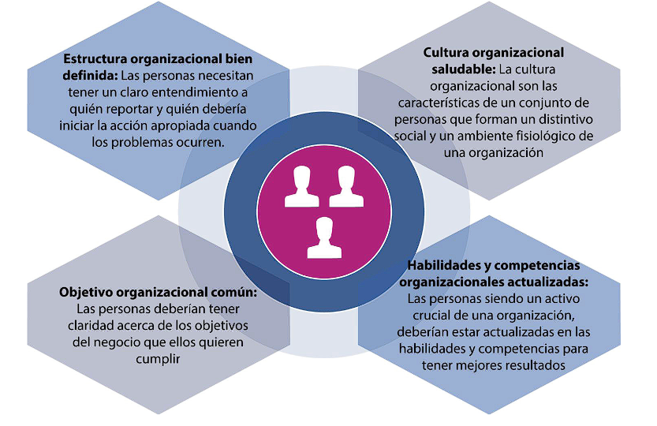
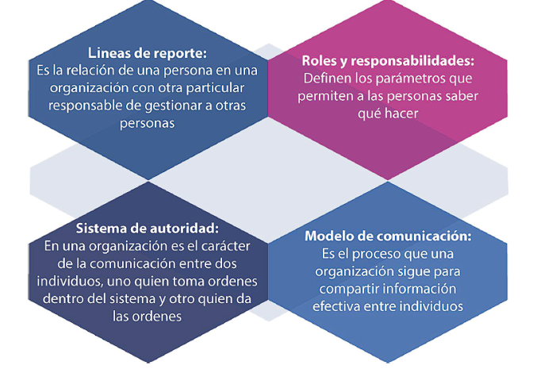
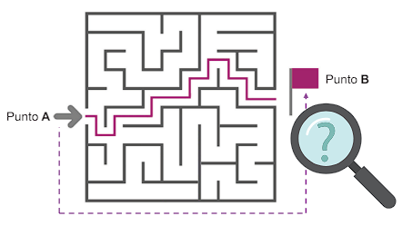

Una persona o grupo de personas que tiene sus propias
funciones con responsabilidades, autoridades y relaciones para
lograr sus objetivos
ITIL 4 proporciona un modelo operativo digital de extremo a extremo en la organización para la entrega y operación de productos y servicios habilitados por TI y permite que los equipos de TI continúen desempeñando un papel importante en la estrategia comercial del negocio. ITIL 4 también proporciona un enfoque integral de extremo a extremo que integra marcos como Lean, Agile y DevOps.
Uno de los grupos de partes interesadas más importantes para
cualquier organización son los consumidores de servicios:
organizaciones e individuos que consumen los servicios que
proporciona la organización.
La organización misma (proveedor de servicios) también es un actor clave, incluidos sus
empleados, gerentes y propietarios.
Para el éxito y la existencia continua de una organización, es
importante que las relaciones con todos los grupos clave de
partes interesadas sean consideradas y gestionadas. Si las partes
interesadas no se relacionan con lo que hace la organización o cómo
lo hace, las relaciones del proveedor con sus consumidores pueden
verse gravemente afectadas.
Las organizaciones poseen o tienen acceso a múltiples recursos, como personas, información y tecnología, flujos de valor y procesos, proveedores y socios. Los productos son configuraciones de estos recursos, creados por la organización, que potencialmente ofrecerán valor para sus clientes. Cada producto que ofrece una organización se crea teniendo en cuenta los requisitos de la cantidad de grupos de consumidores objetivo
En una relación de servicio,
las organizaciones asumirán los roles de proveedor de servicios y
consumidor de servicios. Los dos roles no se excluyen mutuamente,
y las organizaciones generalmente proporcionan y consumen una
cantidad de servicios en un momento dado.
Estas relaciones e interacciones de servicio se representan a través del modelo de relaciones de servicios
Una organización puede crear valor para los consumidores de servicios solo creando valor para sí misma, sus clientes y partes interesadas Las organizaciones a menudo toman la decisión de eliminar los métodos o servicios antiguos o fallidos para mejorar y estar actualizados
Más informaciónUna organización tiene diferentes partes interesadas. Sin embargo, el primer actor más importante es el cliente debido a su gran participación. Son críticos para los proveedores de servicios, ya que ellos (los clientes) pueden cuestionar su capacidad (de los proveedores de servicios) para administrar los servicios de manera efectiva
Más informaciónLas organizaciones necesitan una estructura bien definida para alinear a su personal con la estrategia organizacional general y el modelo operativo. Para respaldar la estrategia y el modelo operativo, las personas deben tener El mayor desafío para las organizaciones hoy en día es la presencia de silos organizacionales.
Una organización organizada en silos no puede actuar rápidamente para aprovechar las oportunidades u optimizar el uso de los recursos en toda la organización. En general, no puede tomar decisiones efectivas sobre los cambios, debido a la limitada visibilidad y las agendas ocultas
| Una organización organizada en silos no puede actuar rápidamente para aprovechar las oportunidades u optimizar el uso de los recursos en toda la organización. |
| En general, no puede tomar decisiones efectivas sobre los cambios, debido a la limitada visibilidad y las agendas ocultas. Sin embargo, algunos de los principios guía de ITIL son particularmente aplicables a los pasos específicos del modelo de mejora continua. |
| El objetivo de cualquier organización es crear valor para sus
clientes, partes interesadas y socios. Para lograr este objetivo, cada
organización participa en la mejora continua.
|
| Una organización puede beneficiarse significativamente de la aplicación de los principios guía de ITIL siguiendo el modelo de mejora continua. Estos principios son aplicables a cada paso de la iniciativa de mejora continua. |
|  |
| Los niveles más altos de la organización deben asumir la responsabilidad de incorporar mejoras continuas en la forma en que las personas piensan y trabajan. Los líderes de la organización deben mostrar compromiso con la mejora continua y el apoyo a las actitudes, el comportamiento y la cultura. |
| En las organizaciones de alta velocidad, es una práctica común descentralizar la aprobación del cambio, lo que hace que la revisión entre pares sea el mejor predictor de alto desempeño |